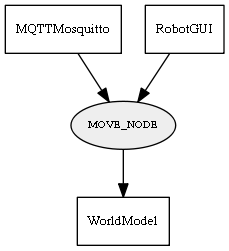

Global overview
All modules
All variables
All commands
Mission files
Pipelines
Variable: MOVE_NODE
Variable info:
Variable name
Short description
Who publishes it?
Who subscribes to it?
MOVE_NODE
Variable contaning the info of the new node position on the Graph (label x y)
MQTTMosquitto
RobotGUI
WorldModel
Variable graph:

Detailed description:
Variable contaning the info of the new node position on the Graph (label x y)
Page generated by
Mooxygen 1.1.0
at Thu Jan 22 11:30:21 2015